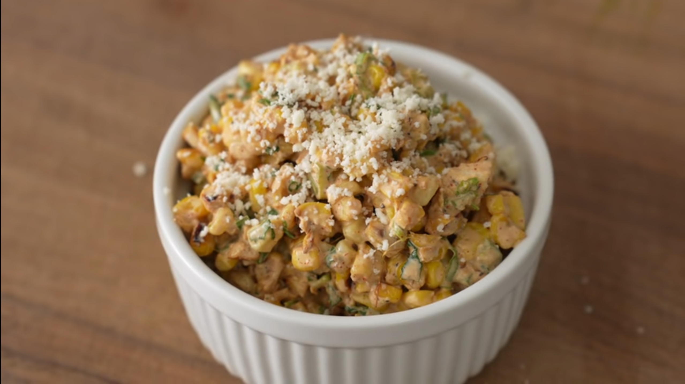

Elote - Street Corn Salad

Description
A simple and refreshing take on Elote, or Mexican Street Corn, perfect for pairing with summer meals on the grill!
Ingredients
- 1000g or kernels from 8 ears sweet corn, cut from cobs
- Neutral oil (avocado, canola, grapeseed, etc)
- Salt
- 20g/1 jalapeno, small dice
- 35-40g or 1 bunch of scallions (middle green part only)
- 1 lime zest and juice
- 2-3 cloves garlic, minced/pressed
- 100g or 1/2c mayo
- 50g or 1/4c sour cream
- 2g or 1tsp black pepper
- 2g or 1tsp chili powder
Steps
- Preheat large cast iron over high, add about 3Tbsp neutral oil
- Add corn kernels and a large pinch of salt
- Cook for 90 seconds, then toss. Cook for 3-5 more minutes, tossing every 90 seconds
- When corn begins to pop and has started to caramelize, it should be done
- Transfer to bowl and allow to cool slightly
- add in jalapeno, scallions, cilantro, lime zest and juice, garlic, mayo, sour cream, pepper, chili powder, and cheese
- Stir to combine
- Taste for seasoning, add salt or lime juice to taste if needed
- Garnish with additional cheese and serve